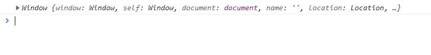

# name 是 window 自带的全局属性
# name 属性可设置或返回存放窗口的名称的一个字符串
它比较特殊。当你打开浏览器没有给 name 赋值时 console.log (window.name === '') 是为 true 的！
console.log(window.name === ''); // true | |
console.log(window); |
参考：
# var 声明 name
var 第一次打印
var name = 'nekoaimer' | |
// 当你第一次赋值时 name 时可以正确打印的 | |
console.log(name); // name |
参考：
var 第二次打印
// var name = 'nekoaimer' | |
// 继续当前窗口，这一次把上面一行注释掉再打印 | |
console.log(name); // name |
参考：虽然没有声明但依然能打印出上一次赋的值 nekoaimer
# const
注意测试 const&let 时，请把窗口关闭重新打开，因为 name 依然是上一次 var 的值
const 第一次打印
const name = 'Saber' | |
console.log(name); // Saber |
const 第二次打印
// const name = 'Saber' | |
// 继续当前窗口，这一次把上面一行注释掉再打印 | |
console.log(name); // ‘’ |
# let
第一次
let name = 'Saber' | |
console.log(name); // Saber |
第二次
// let name = 'Saber' | |
// 继续当前窗口，这一次把上面一行注释掉再打印 | |
console.log(name); // '' |
# this.name
var 声明的都是全局属性，可以通过 window 来获取！
console.log(this) // window | |
var name = 'nekoaimer' | |
console.log(this.name); // nekoaimer | |
console.log(window.window.name); // nekoaimer |
参考：
const&let 不能通过 window 来获取
console.log(this) // window | |
const name = 'nekoaimer' | |
// Mozilla Firefox 打印的是 & lt;empty string> 代表空字符串 | |
console.log(this.name); // '' | |
console.log(window.window.name); // '' |
参考：

总之这就是它们的不同之处，关于 var 与 const&let 区别我有时间还会开一个篇章～之所以提及 name 是在测试面试题的时候如果不注意可能会有偏差！
# this 到底指向什么？
-
我们先来看一个让人困惑的问题：
- 定义一个函数，我们采用三种不同的方式对它进行调用，它产生了三种不同的结果
-
下面的案例可以给我们什么样的启示呢？
- 1. 函数在调用时，JavaScript 会默认给 this 绑定一个值；
- 2.this 的绑定和定义的位置（编写的位置）没有关系；
- 3.this 的绑定和调用方式以及调用的位置有关系；
- 4.this 是在运行时被绑定的；
# 同一个函数的 this 不同
//this 指向什么，跟函数所处的位置是没有关系的 | |
// 跟函数被调用的方式是有关系 | |
function foo() { | |
console.log(this) | |
} | |
// 1. 直接调用这个函数 | |
foo() | |
// 2. 创建一个对象，对象中的函数指向 foo | |
var obj = { | |
name: 'saber', | |
foo: foo | |
} | |
obj.foo() | |
// 3.apply 调用 | |
foo.apply("nekoaimer") |
参考：
-
那么 this 到底是怎么样的绑定规则呢？
-
绑定一：默认绑定；
-
绑定二：隐式绑定；
-
绑定三：显示绑定；
-
绑定四：new 绑定；
-
# this 绑定规则 + 面试题
# 默认绑定
- 什么情况下使用默认绑定呢？独立函数调用。
- 独立的函数调用我们可以理解成函数没有被绑定到某个对象上进行调用；
- 我们通过几个案例来看一下，常见的默认绑定～
-
this 指向例题 1
面试题 function foo1() {
console.log(this)
}function foo2() {
console.log(this)
foo1()
}function foo3() {
console.log(this)
foo2()
}foo3()
下面正确的的输出结果是：C
解析：
[正确输出顺序是：window window window ~ 它们都是独立函数调用，没有绑定 this，指向自然都是 window！~]参考：
-
this 指向例题 2
面试题 var obj = {
name: 'nekoaimer',
age: 16,
foo() {
console.log(this);
}}var bar = obj.foo
bar()
下面正确的的输出结果是：C
解析：
[独立函数调用没有绑定 this，当前指向的自然是 window 了～]参考：
-
this 指向例题 3
面试题 function foo() {
console.log(this);
}var obj = {
name: 'nekoaimer',
age: 16,
foo: foo
}var bar = obj.foo
bar()
下面正确的的输出结果是：C
解析：
[bar 函数调用，当前 this 指向是 window，就这么简单！~]参考：
-
this 指向例题 4
面试题 function foo() {
return function bar() {
console.log(this);
}}var fn = foo()
fn()
下面正确的的输出结果是：D
解析：
[嗯～不过多赘述了～]参考：
# 隐式绑定
- 另外一种比较常见的调用方式是通过某个对象进行调用的：
- 也就是它的调用位置中，是通过某个对象发起的函数调用。
- 我们通过几个案例来看一下，常见的默认绑定～
-
this 指向例题 2
面试题 var obj = {
name: "nekoaimer",
studying: function() {
console.log(this.name + "在学习")
},
sleeping: function() {
console.log(this.name ==='',`${this.name} 在睡觉`)
}}var sleep = obj.sleeping
sleep()
下面正确的的输出结果是：A
解析：
[隐式绑定：obj.sleep ()obj 对象会被 js 引擎绑定到 sleep 函数中的 this 里面，而 sleep 中 this 指向 window，而 window 的 name 在未被定义时是空字符串，this.name 自然获取到的也是空字符串！这就是上面会特意为 name 开一个篇章来讲的原因！ ]
参考：
-
this 指向例题 2
面试题 function foo() {
return function bar() {
console.log(this);
}}var fn = foo()
var obj = {
name: 'nekoaimer',
foo: fn
}obj.foo()
下面正确的的输出结果是：A
解析：
[不深入优先级的话，调用者是 obj，指向自然就是 obj ~]参考：

-
this 指向例题 3
面试题 function foo() {
return function bar() {
console.log(this);
}}var fn = foo()
var obj = {
name: 'nekoaimer',
foo: () => fn
}fn.call(obj)
console.log(obj.foo.name);
下面正确的的输出顺序是：C
解析：
[call 绑定 obj，那么 this 指向 obj，this 的 parentScope 是 foo，foo 的 this 是 obj，你学废了吗～]参考：
-
this 指向例题 4
面试题 var obj1 = {
name: "obj1",
foo: function() {
console.log(this)
}}var obj2 = {
name: "obj2",
bar: obj1.foo
}obj2.bar()
下面正确的的输出结果是：C
解析：
[obj2 是调用者 隐式绑定优先级比独立函数调用高～]参考：

# 显示绑定
隐式绑定有一个前提条件：
- 必须在调用的对象内部有一个对函数的引用（比如一个属性）；
- 如果没有这样的引用，在进行调用时，会报找不到该函数的错误；
- 正是通过这个引用，间接的将 this 绑定到了这个对象上；
如果我们不希望在 对象内部 包含这个函数的引用，同时又希望在这个对象上进行强制调用，该怎么做呢？
-
JavaScript 所有的函数都可以使用 call 和 apply 方法（这个和 Prototype 有关）。
-
它们两个的区别这里不再展开；
-
其实非常简单，第一个参数是相同的，后面的参数，apply 为数组，call 为参数列表；
-
这两个函数的第一个参数都要求是一个对象，这个对象的作用是什么呢？就是给 this 准备的。
在调用这个函数时，会将 this 绑定到这个传入的对象上。
因为上面的过程，我们明确的绑定了 this 指向的对象，所以称之为 显示绑定
-
通过 call 或者 apply 绑定 this 对象
- 显示绑定后，this 就会明确的指向绑定的对象
function foo() {
console.log(this)
}const info = {
name: 'nekoaimer'
}foo.call(window) // window
foo.call(info) // info
foo.call(233) // Number, 存放是 233
-
如果我们希望一个函数总是显示的绑定到一个对象上，可以怎么做呢
function foo() { | |
console.log(this) | |
} | |
const info = { | |
name: 'nekoaimer' | |
} | |
var bar = foo.bind(info) | |
bar() //info 对象 |
# new 绑定
- JavaScript 中的函数可以当做一个类的构造函数来使用，也就是使用 new 关键字。
- 使用 new 关键字来调用函数是，会执行如下的操作：
- 创建一个全新的对象；
- 这个新对象会被执行 prototype 连接；
- 这个新对象会绑定到函数调用的 this 上（this 的绑定在这个步骤完成）；
- 如果函数没有返回其他对象，表达式会返回这个新对象；
// 我们通过一个 new 关键字调用一个函数时 (构造器), 这个时候 this 是在调用这个构造器时创建出来的对象 | |
//this = 创建出来的对象 | |
// 这个绑定过程就是 new 绑定 | |
function Person(name, age) { | |
this.name = name | |
this.age = age | |
} | |
var p1 = new Person("Lain", 16) | |
console.log(p1.name, p1.age) | |
var p2 = new Person("Saber", 16) | |
console.log(p2.name, p2.age) | |
var obj = { | |
foo: function() { | |
console.log(this) | |
} | |
} |
# 内置函数绑定
- 有些时候，我们会调用一些 JavaScript 的内置函数，或者一些第三方库中的内置函数。
- 这些内置函数会要求我们传入另外一个函数；
- 我们自己并不会显示的调用这些函数，而是 JavaScript 内部或者第三方库内部会帮助我们执行；
- 这些函数中的 this 又是如何绑定的呢？
- setTimeout、数组的 forEach、div 的点击
# settimeout
-
this 指向例题 1
面试题 var obj = {
name: 'Lain'
}function mySetTimer(fn, duration) {
setTimeout(() => {
fn.call(function foo() {
return obj}.call(this))
},duration)
}mySetTimer(function () {
console.log(this)
},1000)
下面正确的的输出结果是：B
解析：
[fn.call 代表调用函数，此时返回值是 obj，而 foo (){}.call () 这种写法虽然不会报错但没有实际意义，而此时调用的函数是 mySetTimer 里面的第一个参数，它正在进行 console.log (this) 操作，此时意味着 fn.call (obj), 那么打印出来的 this 自然就是 obj 了～]参考：
-
this 指向例题 2
面试题 var obj = {
name: 'Lain'
}function mySetTimer(fn, duration) {
setTimeout(() => {
fn.call(function foo() {
return mySetTimer}.call(fn))
}, duration)
}mySetTimer(function bar() {
console.log(this.name)
},1000)
下面正确的的输出结果是：C
解析：[ 懒得打字了，发挥智慧的小脑瓜想想吧 (～￣▽￣)～ ]
参考：
# 监听点击
// html | |
<button>点击</button> | |
// js | |
window.addEventListener('load', () => { | |
const btn = document.querySelector('button') | |
btn.onclick = function() { | |
console.log('onclick:',this) | |
} | |
btn.addEventListener('click', function() { | |
console.log('addEventListener:',this) | |
}) | |
}) |
# forEach/map
-
this 指向例题 1
面试题 var names = ["Saber", "Lain", "Maelwine"]
names.forEach(function(item) {
console.log(item, this)
}, setTimeout(() => {}))
console.log(setTimeout(() => {}))
下面 this 的正确输出结果是：B
解析：[为什么会是 Number 了？其实你只要打印 console.log (setTimeout (() => {})) 得到的结果是 1，那又为什么打印会是个 1 呢？嗯～个人猜测：大家都知道 setTimeout 是异步的，因为只执行了一次异步，那么它的进程是 1，如果同时打印两次，那么相当于有两个异步进程，第一个是 1，第二个打印的就是 2 了～]
参考：

-
this 指向例题 2
面试题 var names = ["Saber", "Lain", "Maelwine"]
names.forEach(function(item) {
console.log(setTimeout(() => { }))
console.log(setTimeout(() => {}))
}, setTimeout(() => {}))
下面正确的打印顺序是：B
解析：[ 懒得打字了，发挥智慧的小脑瓜想想吧 (～￣▽￣)～ ]
参考：
-
this 指向例题 3
面试题 var names = ["Saber", "Lain", "Maelwine"]
var obj = {
names
}function foo() {
return obj}names.map(function(item) {
console.log(item, this)
}, foo.call(obj))
下面 this 的指向输出顺序是：A
解析：[ 懒得打字了，发挥智慧的小脑瓜想想吧 (～￣▽￣)～ ]
参考：
-
this 指向例题 4
面试题 var names = ["Saber", "Lain", "Maelwine"]
var obj = {
names
}function foo() {
return obj}names.map(function(item) {
console.log(item, this)
}, foo.bind(obj))
下面 this 的指向输出顺序是：B
解析：[ 懒得打字了，发挥智慧的小脑瓜想想吧 (～￣▽￣)～就这些吧，出题好累～]
参考：


# 特殊绑定
# 忽略显示绑定
-
this 指向例题 1
面试题 function foo() {
console.log(this)
}foo.apply(null)
foo.apply(undefined)
var bar = foo.bind(null)
bar()
下面 this 的指向输出顺序是：C
参考：
# 间接函数引用
-
this 指向例题 1
面试题 var saber = {
name: "Saber",
foo: function() {
console.log(this)
}}var lain = {
name: "Lain"
};
lain.bar = saber.foo
lain.bar()
下面 this 的指向是：A
参考：
-
this 指向例题 2
面试题 var saber = {
name: "Saber",
foo: function() {
console.log(this)
}}var lain = {
name: "Lain"
}; // 注意这里不加分号词法解析不了会报错
(lain.bar = saber.foo)()
下面 this 的指向输出顺序是：C
参考：

# this 规则优先级 + 面试题
-
学习了四条规则，接下来开发中我们只需要去查找函数的调用应用了哪条规则即可，但是如果一个函数调用位置应用了多条规则，优先级谁更高呢？
-
1. 默认规则的优先级最低
- 毫无疑问，默认规则的优先级是最低的，因为存在其他规则时，就会通过其他规则的方式来绑定 this
-
2. 显示绑定优先级高于隐式绑定
-
3.new 绑定优先级高于隐式绑定
-
4.new 绑定优先级高于 bind
- new 绑定和 call、apply 是不允许同时使用的，所以不存在谁的优先级更高
- new 绑定可以和 bind 一起使用，new 绑定优先级更高
# 优先级
# 默认绑定
-
this 指向例题 1
面试题 var obj = {
name: "Lain",
favorite: () => {
(function foo() {
console.log(this)
}())
}}obj.favorite()
下面 this 的指向是：D
解析：[favorite 里面是一个立即执行函数，在你调用之前它已经执行完了，所以它的 this 是 window。如果你打印 obj.favorite () 这句结果自然是 undefined(～￣▽￣)～~ ]
参考：
# 显示绑定
-
this 指向例题 2
面试题 function foo() {
console.log(this)
}var lain = {
name: "lain",
foo: foo.bind("Saber")
}lain.foo()
下面 this 的指向是：C
解析：[ bind 绑定比默认绑定的优先级更高！(～￣▽￣)～~ ]
参考：
-
this 指向例题 3
面试题 var nekoaimer = {
name: "nekoaimer",
favorite: function() {
console.log(this)
}}nekoaimer.favorite.apply('Saber')
nekoaimer.favorite.call('Lain')
下面 this 的指向输出顺序是：A
解析：[ bind 绑定比默认绑定的优先级更高！(～￣▽￣)～~ ]
参考：
# 隐式绑定
-
this 指向例题 1
面试题 var obj = {
name: "Lain",
foo: function() {
console.log(this)
}}var bar = obj.foo.bind("Saber")
bar()
下面 this 的指向是：C
解析：[ bind 绑定比隐式绑定的优先级更高！(～￣▽￣)～~ ]
参考：
-
this 指向例题 2
面试题 function foo() {
console.log(this);
}var obj = {
name: "Lain",
foo: foo.bind("Saber")
}obj.foo()
下面 this 的指向是：B
解析：[ bind 绑定比隐式绑定的优先级更高！(～￣▽￣)～~ ]
参考：
# new 绑定
-
this 指向例题 1
面试题 var info = {
name: "info",
sleeping: function() {
console.log(this)
}}const Saber = new info.sleeping()
下面 this 的指向是：C
解析：[ new 的优先级高于隐式绑定！(～￣▽￣)～~ ]
参考：
-
this 指向例题 2
面试题 function sleeping() {
console.log(this)
}var bar = sleeping.bind("Saber")
var obj = new bar()
下面 this 的指向是：D
解析：[ 结论: new 关键字不能和 apply/call 一起来使用
new 绑定 > 显示绑定 (apply/call/bind) > 隐式绑定 (obj.foo ()) > 默认绑定 (独立函数调用) (～￣▽￣)～~ ]
参考：
-
this 指向例题 3
面试题 function foo(){
console.log(this);
}foo.bind('Saber').apply('Lain')
下面 this 的指向是：B
解析：[ bind 比 apply 的优先级更高！(～￣▽￣)～~ ]
参考：
-
this 指向例题 4
面试题 function foo(){
console.log(this);
}foo.bind('Saber').call('Lain')
下面 this 的指向是：B
解析：[ bind 也比 call 的优先级更高！(～￣▽￣)～~ ]
参考：
# 面试题
-
this 指向例题 1
面试题 var name = "window";
var saber = {
name: "saber",
sayName: function () {
console.log(this.name);
}};
function sayName() {
var lain = saber.sayName;
lain();
saber.sayName();
(saber.sayName)();
(lain = saber.sayName)();
}sayName();
下面正确的输出顺序是：C
解析：[懒得打字了，发挥智慧的小脑瓜想想吧 (～￣▽￣)～~ ]
参考：
-
this 指向例题 2
面试题 var name = 'window'
var person1 = {
name: 'person1',
foo1: function () {
console.log(this.name)
},
foo2: () => console.log(this.name),
foo3: function () {
return function () {
console.log(this.name)
}},
foo4: function () {
return () => {
console.log(this.name)
}}}var person2 = { name: 'person2' }
person1.foo1();
person1.foo1.call(person2);
person1.foo2();
person1.foo2.call(person2);
person1.foo3()();
person1.foo3.call(person2)();
person1.foo3().call(person2);
person1.foo4()();
person1.foo4.call(person2)();
person1.foo4().call(person2);
下面正确的输出顺序是：B
解析：[懒得打字了，发挥智慧的小脑瓜想想吧 (～￣▽￣)～~ ]
参考：
-
this 指向例题 3
面试题 function Person (name) {
this.name = name
this.foo1 = function () {
console.log(this.name)
},
this.foo2 = () => console.log(this.name),
this.foo3 = function () {
return function () {
console.log(this.name)
}},
this.foo4 = function () {
return () => {
console.log(this.name)
}}}var person1 = new Person('person1')
var person2 = new Person('person2')
person1.foo1()
person1.foo1.call(person2)
person1.foo2()
person1.foo2.call(person2)
person1.foo3()()
person1.foo3.call(person2)()
person1.foo3().call(person2)
person1.foo4()()
person1.foo4.call(person2)()
person1.foo4().call(person2)
下面正确的输出顺序是：C
解析：[懒得打字了，发挥智慧的小脑瓜想想吧 (～￣▽￣)～~ ]
参考：
-
this 指向例题 4
面试题 var name = 'window'
function Person (name) {
this.name = name
this.obj = {
name: 'obj',
foo1: function () {
return function () {
console.log(this.name)
}},
foo2: function () {
return () => {
console.log(this.name)
}}}}var person1 = new Person('person1')
var person2 = new Person('person2')
person1.obj.foo1()()
person1.obj.foo1.call(person2)()
person1.obj.foo1().call(person2)
person1.obj.foo2()()
person1.obj.foo2.call(person2)()
person1.obj.foo2().call(person2)
下面正确的输出顺序是：A
解析：[懒得打字了，发挥智慧的小脑瓜想想吧 (～￣▽￣)～~ ]
参考：